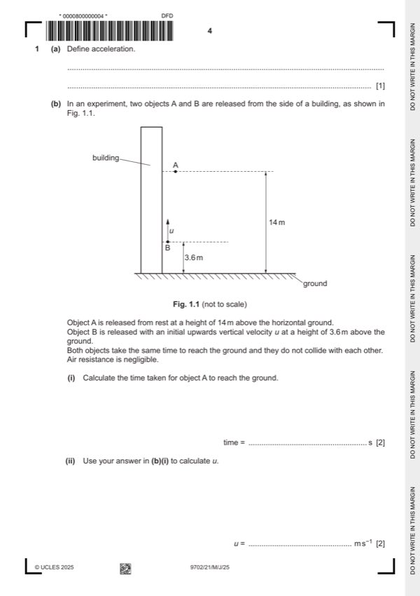

Question 1

Original paper page 4
Part 1(a) — solution
- [B1] Obtain/use: rate of change of velocity
Mark points
- [B1] Obtain/use: rate of change of velocity
Part 1(b)(i) — solution
Answer: OR (C1)
- [A1] Obtain/use: t = 1.7 s
Mark points
- [A1] Obtain/use: t = 1.7 s
Part 1(b)(ii) — solution
Answer: OR (C1)
- [A1] Obtain/use: u = (–) 6.2 m s–1
Mark points
- [A1] Obtain/use: u = (–) 6.2 m s–1
Part 1(c)(i) — solution
- [B1] Obtain/use: Less time (as it reaches a lower height)
- [B1] Obtain/use: (because) the initial vertical (component of the) velocity is smaller (than in part (b))
Mark points
- [B1] Obtain/use: Less time (as it reaches a lower height)
- [B1] Obtain/use: (because) the initial vertical (component of the) velocity is smaller (than in part (b))
Part 1(c)(ii) — solution
- [B1] Obtain/use: The (total) initial energy is the same (as in part (b))
- [B1] Obtain/use: change in gravitational potential energy is same, so speed is the same
Mark points
- [B1] Obtain/use: The (total) initial energy is the same (as in part (b))
- [B1] Obtain/use: change in gravitational potential energy is same, so speed is the same